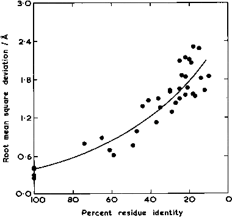
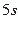

Chothia & Lesk (1986) analizaron por vez primera la relación entre la secuencia y la estructura de las proteínas, que se puede resumir en esta figura:
|  |
Este artículo pionero publica la observación de que a una determinada conservación entre las secuencias A y B, calculada por medio de un alineamiento, le corresponde una mayor o menor divergencia en la comparación de sus estructuras terciarias, medida en términos de desviaciones (RMSD, en Angstrom) en las posiciones de sus residuos, dependiendo de si las mutaciones ocurren en el interior ( core ) o exterior del plegamiento.
|  | (1.1) |
Además, éste y otros trabajos posteriores, como Pascual-Garcia et al. (2010); Illergard et al. (2009), sugieren que la estructura es una propiedad de las proteínas que se conserva en mayor medida que la secuencia durante la historia evolutiva. Lo excepcional es que secuencias similares tengan grandes diferencias estructurales (Kosloff & Kolodny, 2008).

|
El panel C de la figura 1.29 es útil para recordar la correspondencia que se puede establecer entre un alineamiento de secuencias y la superposición de las correspondientes estructuras. En un alineamiento de secuencia se establece qué residuos de una proteína ocupan el mismo lugar en la secuencia que los de otras proteínas similares. En cambio, en una superposición buscamos residuos que ocupan el mismo lugar en la estructura, a los que llamamos residuos equivalentes. Mientras el primero se puede calcular aun sin tener las estructuras, solamente con la secuencia, la superposición requiere conocer las coordenadas en tres dimensiones de las proteínas en cuestión. Con aquellas proteínas con estructuras resueltas es posible hacer el siguiente ejercicio, que tiene como objeto explorar esta correspondencia y aprender que un alineamiento de secuencias con baja identidad puede contener errores que se hacen patentes al comprobar la correspondiente superposición.
Tomemos por ejemplo las coordenadas de dos lisozimas del PDB, como 2NWD y 1GD6 (2nwd.pdb,1gd6.pdb), y alineemos sus secuencias:
2nwd KVFERCELARTLKRLGMDGYRGISLANWMCLAKWESGYNTRATNYNAGDRSTDYGIFQIN 60 1gd6 KTFTRCGLVHELRKHGFEEN---LMRNWVCLVEHESSRDTSKTNTNR-NGSKDYGLFQIN 56 2nwd SRYWCNDGKTPGAVNACHLSCSALLQDNIADAVACAKRVVRDPQGIRAWVAWRNRCQNRD 120 1gd6 DRYWCSKGASPG--KDCNVKCSDLLTDDITKAAKCAKKIYKR-HRFDAWYGWKNHCQG-- 111 2nwd VRQYVQGCGV 130 1gd6 SLPDISSC-- 119
En este alineamiento las columnas alineadas son parejas de residuos equivalentes o inserciones/deleciones sin alinear (indels).
Mediante un algoritmo similar al descrito en este trabajo de McLachlan (1979), que hace uso de la
descomposición en valores singulares,
podemos calcular la superposición correspondiente. El siguiente programa, que importa
el módulo SVD, lo implementa:
#!/usr/bin/env python
""" prog3.1 Calcula la superposicion en 3D equivalente a un alineamiento de
secuencia de dos proteinas del PDB. Genera un fichero PDB con la superposicion
obtenida. """
__author__ = 'Bruno Contreras-Moreira'
from math import sqrt
import SVD
# 0) parametros del algoritmo:
pdb1 = { 'file':'./files/1gd6.pdb',
'align':'KTFTRCGLVHELRKHGFEEN---LMRNWVCLVEHESSRDTSKTNTNR-NGSKDYGLFQIN' +
'DRYWCSKGASPG--KDCNVKCSDLLTDDITKAAKCAKKIYKR-HRFDAWYGWKNHCQG--SLPDISSC--' };
pdb2 = { 'file':'./files/2nwd.pdb',
'align':'KVFERCELARTLKRLGMDGYRGISLANWMCLAKWESGYNTRATNYNAGDRSTDYGIFQIN' +
'SRYWCNDGKTPGAVNACHLSCSALLQDNIADAVACAKRVVRDPQGIRAWVAWRNRCQNRDVRQYVQGCGV' };
# 1) subrutinas
def lee_coordenadas_PDB(filename):
""" Devuelve una lista de residuos, cada uno con las coordenadas de sus atomos.
Ejemplo de linea en formato PDB:
ATOM 42 CA PHE X 3 6.981 22.274 18.887 1.00 6.72 """
coords = []
pdbfile = open(filename,'r')
try:
res,prev_resID = '',''
for line in pdbfile:
if(line[0:3] == 'TER'): break
if(line[0:4] != 'ATOM'): continue
resID = line[17:26]
if(resID != prev_resID):
if(res != ''): coords.append(res)
res = line
else: res += line
prev_resID = resID
if(res != ''): coords.append(res)
finally:
pdbfile.close()
return coords
def coords_alineadas(align1,coords1,align2,coords2):
""" Devuelve dos listas de igual longitud con las coordenadas de los atomos CA
de los residuos alineados en align1 y align2."""
total1,total2 = -1,-1
align_coords1,align_coords2 = [],[]
length = len(align1)
if(length != len(align2)):
print "# coords_alineadas: alineamientos tienen != longitud",
return ([],[])
for r in range(0, length):
res1 = align1[r:r+1]
res2 = align2[r:r+1]
if(res1 != '-'): total1+=1
if(res2 != '-'): total2+=1
if(res1 == '-' or res2 == '-'): continue #solo interesan pares alineados
align_coords1.append( extrae_coords_atomo(coords1[total1],' CA ') )
align_coords2.append( extrae_coords_atomo(coords2[total2],' CA ') )
return (align_coords1,align_coords2)
def extrae_coords_atomo(res,atomo_seleccion):
""" De todas las coordenadas atomicas de un residuo, extrae las de un atomo particular
y devuelve una lista con las X, Y y Z de ese atomo."""
atom_coords = []
for atomo in res.split("\n"):
if(atomo[12:16] == atomo_seleccion):
atom_coords = [ float(atomo[30:38]), float(atomo[38:46]), float(atomo[46:54]) ]
return atom_coords
def calcula_superposicion_SVD(pdbh1,pdbh2,originalPDBname,fittedPDBname,test=False):
""" Calcula matriz de rotacion que aplicada sobre coords1 minimiza RMSD respecto a coords2
y crea archivo con formato PDB con la superposicion resultante.
Emplea el algoritmo de 'Single Value Decomposition' del paquete SVD. """
def calcula_centro(coords):
centro = [0,0,0]
for coord in (coords):
for dim in range(0,3): centro[dim] += coord[dim]
for dim in range(0,3): centro[dim] /= len(coords)
return centro
def calcula_coordenadas_centradas(coords,centro):
ccoords,total = [],0
for coord in (coords):
ccoords.append(coord)
for dim in range(0,3): ccoords[total][dim] -= centro[dim]
total+=1
return ccoords
def calcula_coordenadas_rotadas(coords,rotacion):
rcoords = [0,0,0]
for i in range(0,3):
tmp = 0.0
for j in range(0,3): tmp += coords[j] * rotacion[i][j]
rcoords[i] = tmp
return rcoords
# escribe fichero PDB con coordenadas originales
pdbfile = open(originalPDBname, 'w')
print >> pdbfile, "HEADER %s\n" % pdbh1['file'],
for res in (pdbh1['coords']): print >> pdbfile, res,
print >> pdbfile, "TER\n",
print >> pdbfile, "HEADER %s\n" % pdbh2['file'],
for res in (pdbh2['coords']): print >> pdbfile, res,
print >> pdbfile, "TER\n",
pdbfile.close()
## prepara coordenadas de atomos CA alineados (equivalentes)
coords1,coords2 = pdbh1['align_coords'],pdbh2['align_coords']
centro1 = calcula_centro(coords1)
centro2 = calcula_centro(coords2)
ccoords1 = calcula_coordenadas_centradas(coords1,centro1)
ccoords2 = calcula_coordenadas_centradas(coords2,centro2)
## prepara matriz producto para descomposicion matricial SVD matriz = U.Sigma.V
matriz = [[0,0,0],[0,0,0],[0,0,0]]
peso = 1.0/len(ccoords1) # todos los residuos cuentan igual
for i in range(0,3):
for j in range(0,3):
tmp = 0.0
for k in range(0,len(ccoords1)): tmp += ccoords1[k][i] * ccoords2[k][j] * peso
matriz[i][j]=tmp;
if(test == True):
for i in range(0,3): print "mat %f %f %f\n" % (matriz[i][0],matriz[i][1],matriz[i][2]),
## invoca descomposicion en valores singulares y comprueba matrix/determinante
[U, Sigma, V] = SVD.svd( matriz )
if(test==True):
for i in range(0,3): print "U %f %f %f\n" % (U[i][0],U[i][1],U[i][2]),
for i in range(0,3): print "Vt %f %f %f\n" % (V[i][0],V[i][1],V[i][2]),
rotacion = [[0,0,0],[0,0,0],[0,0,0]]
for i in range(0,3):
for j in range(0,3):
rotacion[i][j]= U[j][0]*V[i][0] + U[j][1]*V[i][1] + U[j][2]*V[i][2]
## evalua error de la superposicion
rmsd = 0.0
for n in range(0,len(coords1)):
coords1_rot = calcula_coordenadas_rotadas(ccoords1[n],rotacion)
for i in range(0,3):
desv = ccoords2[n][i]-coords1_rot[i]
rmsd += desv*desv
rmsd /= len(coords1)
## imprime superposicion de todos los atomos en formato PDB
pdbfile = open(fittedPDBname, 'w')
# pdb superpuesto, coordenadas rotadas (1)
print >> pdbfile, "HEADER %s (rotated)\n" % pdbh1['file'],
print >> pdbfile, "REMARK Rotation matrix:\n",
for i in range(0,3): print >> pdbfile, "REMARK %f %f %f\n" % \
(rotacion[i][0],rotacion[i][1],rotacion[i][2]),
print >> pdbfile, "REMARK centroid: %f %f %f\n" % (centro1[0],centro1[1],centro1[2]),
print >> pdbfile, "REMARK partner centroid: %f %f %f\n" % \
(centro2[0],centro2[1],centro2[2]),
for res in (pdbh1['coords']):
for atomo in res.split("\n"):
if(atomo == ''): break
atcoords = extrae_coords_atomo(res,atomo[12:16])
atcoords[0] -= centro1[0] # centralo
atcoords[1] -= centro1[1]
atcoords[2] -= centro1[2]
coords_rot = calcula_coordenadas_rotadas(atcoords,rotacion)
# trasladalo al pdb referencia
atcoords[0] = centro2[0] + coords_rot[0]
atcoords[1] = centro2[1] + coords_rot[1]
atcoords[2] = centro2[2] + coords_rot[2]
print >> pdbfile, "%s%8.3f%8.3f%8.3f%s" % \
(atomo[0:30],atcoords[0],atcoords[1],atcoords[2],atomo[54:])
print >> pdbfile, "TER\n",
# pdb de referencia, coordenadas originales (2)
print >> pdbfile, "HEADER %s\n" % pdbh2['file'],
for res in (pdbh2['coords']): print >> pdbfile, res,
print >> pdbfile, "TER\n",
pdbfile.close()
return sqrt(rmsd)
# 2) programa principal ###################################################
pdb1['coords'] = lee_coordenadas_PDB( pdb1['file'] )
pdb2['coords'] = lee_coordenadas_PDB( pdb2['file'] )
print "# total residuos: pdb1 = %s pdb2 = %s\n" % (len(pdb1['coords']),len(pdb2['coords'])),
(pdb1['align_coords'],pdb2['align_coords']) = coords_alineadas(pdb1['align'],pdb1['coords'],\
pdb2['align'],pdb2['coords'] )
print "# total residuos alineados = %s\n" % (len(pdb1['align_coords'])),
rmsd = calcula_superposicion_SVD(pdb2,pdb1,'original.pdb','align_fit.pdb')
print "\n# coordenadas originales = original.pdb\n# superposicion optima:\n",
print "# archivo PDB = align_fit.pdb\n# RMSD = %1.2f Angstrom\n" % (rmsd),
Al cambiar el alineamiento cambia la superposición, demostrando la importancia que tiene la variable 'calidad de los alineamientos' si vamos a hacer inferencias estructurales. Sabrías editar el código para replicar el algoritmo de superposición de Chothia & Lesk (1986)?